Brilhos, luas e sol em folha de ouro com luz suave.
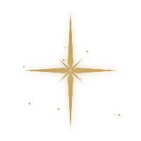
Estrela de quatro pontas longas, com brilho suave.
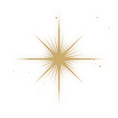
Raios finos de tamanhos diferentes, como luz que se abre.
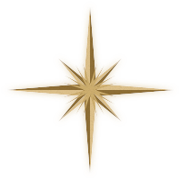
Raios principais longos e secundários curtos, estilo gravura.
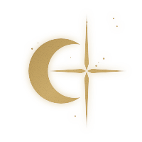
Crescente atravessada por um brilho longo.
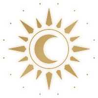
Disco solar com raios e lua no centro.
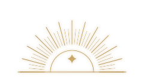
Meio sol de raios finos, como amanhecer.
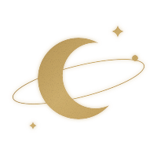
Crescente com anel e pequena estrela.
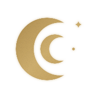
Duas crescentes encaixadas: o consciente e o oculto.
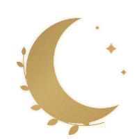
O místico e a natureza abraçados.
Portais, guirlanda, carta, rosa dos ventos e ornamentos.
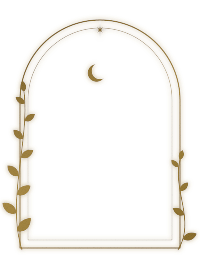
Moldura de passagem com vinha subindo.
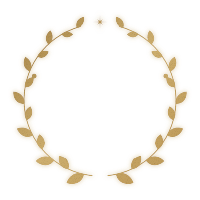
Moldura circular aberta, para nomes e selos.
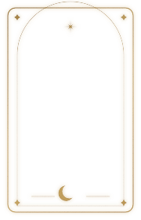
Inspirada nas cartas de tarô, com sol e lua.
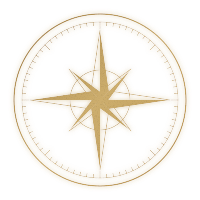
Astrolábio e direção: escolhas e caminhos.
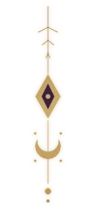
Ornamento de linha com losango, lua e pontos.
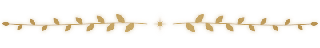
Ramos espelhados com estrela ao centro.